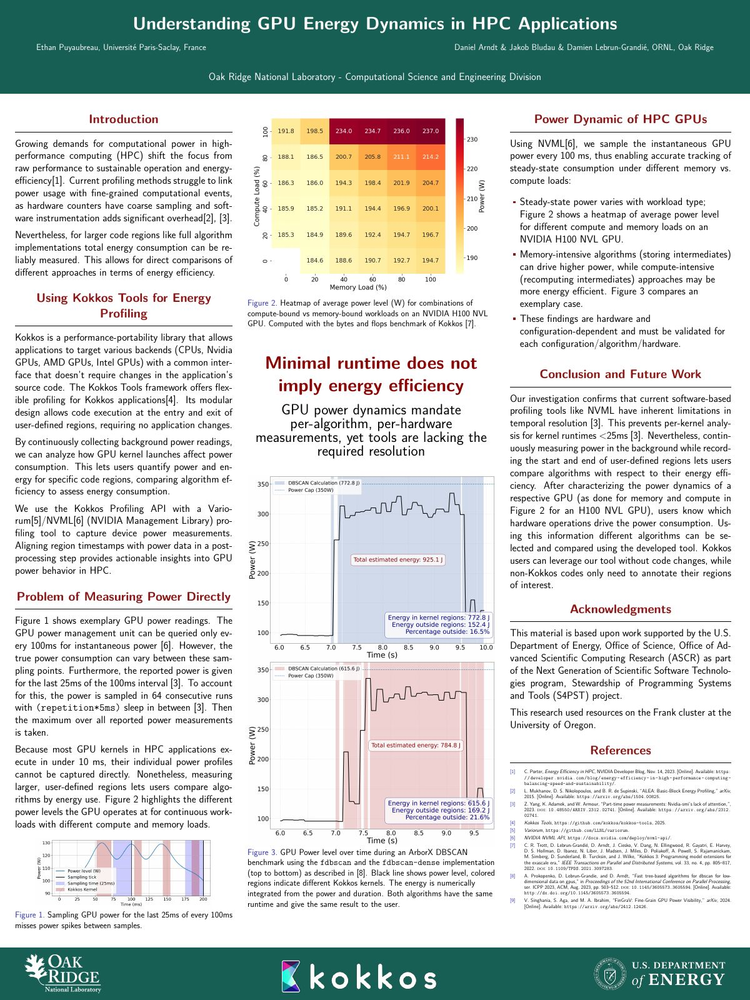

Abstract
Energy efficiency is becoming as decisive as raw performance in high-performance computing, yet existing profiling tools struggle to attribute power draw to fine-grained computational events: hardware counters sample coarsely, and software instrumentation adds significant overhead.
This work extends the Kokkos Tools framework with a Variorum/NVML connector that samples GPU power from a background daemon and aligns user-defined region timestamps with the power trace in a postprocessing step. Kokkos applications need no code changes; other codes only have to annotate the regions of interest.
The poster characterizes the resolution limits of that approach. NVML exposes instantaneous power
only every 100 ms, and the value reported covers just the last 25 ms of each interval, so
the sub-10 ms kernels typical of HPC codes cannot be profiled individually. Larger user-defined
regions, however, remain reliably measurable. A power heatmap across compute- and memory-bound
workloads on an NVIDIA H100 NVL shows that steady-state power depends strongly on workload
type, and an ArborX DBSCAN case study compares two implementations, fdbscan and
fdbscan-dense, which have the same runtime and return
the same result but consume 925.1 J and 784.8 J respectively.
Minimal runtime does not imply energy efficiency. GPU power dynamics mandate per-algorithm, per-hardware measurements, and current tools lack the resolution required to provide them.
Re-analysis, September 2026
The abstract above is the one presented in 2025. Going back to the raw power traces and region
timestamps of the 64 runs of each implementation, the two DBSCAN implementations do not take the
same time. Over the DBSCANCalculation region, the medians are 2.69 s and 777 J for
fdbscan, and 2.19 s and 580 J for fdbscan-dense: 19% less
time and 25% less energy, because the dense variant also draws 9% less power
(262 W against 288 W). A bootstrap over the runs gives 17.6 to 19.3% less time and
24.9 to 26.0% less energy (95% intervals). The poster's energy boxes (772.8 J and 615.6 J) sum
every kernel region of one run, and its totals (925.1 J and 784.8 J) include the time
outside any region.
The first 16 fdbscan-dense runs, consecutive at the start of the series, are about
1.5 times slower in every phase (3.4 to 3.9 s) and draw less power (222 W on average),
which points to a different machine state rather than to the algorithm. They are kept in the
medians above. Without them the comparison barely moves (19% less time, 26% less energy); with
them, the means over all 64 runs give 5% less time and 18% less energy.
This data no longer supports the poster's closing line, “Minimal runtime does not imply energy efficiency”: here the faster implementation is also the more frugal one. What it shows is that the energy gap (25%) is wider than the time gap (19%), so a time profile understates the gain. The poster itself is left as presented. Details in the write-up.
Data and reproduction
The raw data behind these figures is published with this page: the NVML power trace, Kokkos region timestamps and kernel timestamps of the 64 runs of each implementation (data/, 2.3 MB of CSV), and a standard-library Python script that recomputes the medians and the two plotted runs from them (analysis/dbscan_medians.py). A CI job reruns it on every push and compares its output with the published figures. The poster's own boxes and totals came from its 2025 plotting script and are not recomputed here.
analysis/to_trace_v1.py converts any run
into the trace format of energy-dashboard-for-kokkos, which then attributes
the energy to every region and kernel. The tool interpolates power at region boundaries, so it
reads about 2 J more than the script for the same region (771.8 J against
769.3 J for the plotted fdbscan run).
Poster

External reference
The work is cited in the U.S. Department of Energy technical report S4PST 2024–2025 Project Report (ORNL/SPR-2026/4406, January 2026):
Ethan Puyaubreau, an undergraduate ORNL summer 2025 intern from Paris-Saclay University, France, worked on Kokkos’ performance tool capabilities to analyze energy usage of HPC applications. The results were presented at the Smoky Mountains Computational Sciences and Engineering Conference.
Reference [63] of the same report: “Ethan Puyaubreau. Understanding GPU energy dynamics in HPC applications. Poster presented at the Smoky Mountains Computational Sciences and Engineering Conference, 2025.” — read on OSTI.GOV
My appointment title was Graduate Research Fellow (GRO program); I was then in the master's-level engineering cycle at Polytech Paris-Saclay.
Associated code
The tooling behind the poster is contributed upstream (status as of September 2026) to kokkos/kokkos-tools:
- Merged #300 Energy profiling tools: Add Daemon class for periodic task execution
- Open #299 Energy profiling tools: Core infrastructure with timing tool and export capabilities
- Open #301 Energy profiling tools: NVML-based measurement tool
- Draft #302 Energy profiling tools: Variorum-based measurement tool
- Draft #296 Combining multiple Kokkos Tools using a common interface (PoC)
- Merged #293 Update Makefiles to nvtx3
Cite this poster
@misc{puyaubreau2025gpuenergy,
author = {Puyaubreau, Ethan and Arndt, Daniel and Bludau, Jakob
and Lebrun-Grandi{\'e}, Damien},
title = {Understanding {GPU} Energy Dynamics in {HPC} Applications},
howpublished = {Poster presented at the Smoky Mountains Computational
Sciences and Engineering Conference (SMC 2025),
Chattanooga, TN, USA},
year = {2025},
month = sep,
url = {https://ethan-puyaubreau.github.io/smc2025-gpu-energy-poster/}
}Acknowledgments
This material is based upon work supported by the U.S. Department of Energy, Office of Science, Office of Advanced Scientific Computing Research (ASCR) as part of the Next Generation of Scientific Software Technologies program, Stewardship of Programming Systems and Tools (S4PST) project. This research used resources on the Frank cluster at the University of Oregon.